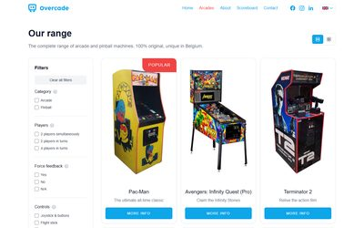
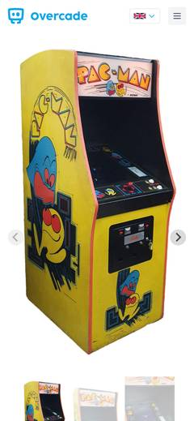
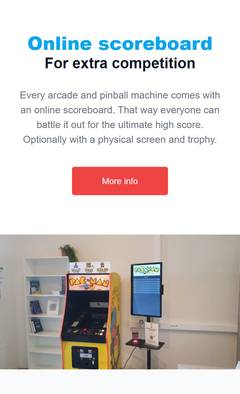
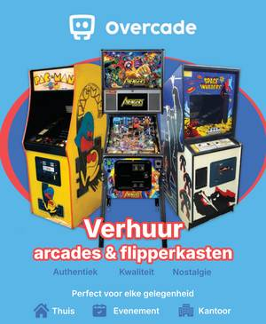

$ cd ~/projects/overcade
> Overcade_
Dec 2024 (Ongoing)
Overcade is my arcade and pinball rental. I collect and restore original machines, and companies and private customers can rent them for the office, at home or for events. This is the website I built for it: overcade.be.
The heart of the site is the catalogue. Every machine has its own page with a specification list and a photo carousel, and a filter sidebar helps visitors find the right one. Next to the machines there is a separate scoreboard software, Agon.
The site is built with Jekyll and Tailwind CSS, in Dutch and English, and deployment is automated through GitHub Actions. I chose Jekyll as a challenge for myself. I'm used to full-stack development, but this is a static site, so I wanted to learn one of the popular static site generators.




Overcade is more than a website for me. I designed the whole house style myself: the logo, the colours, the look of the brand, flyers and clothing.
